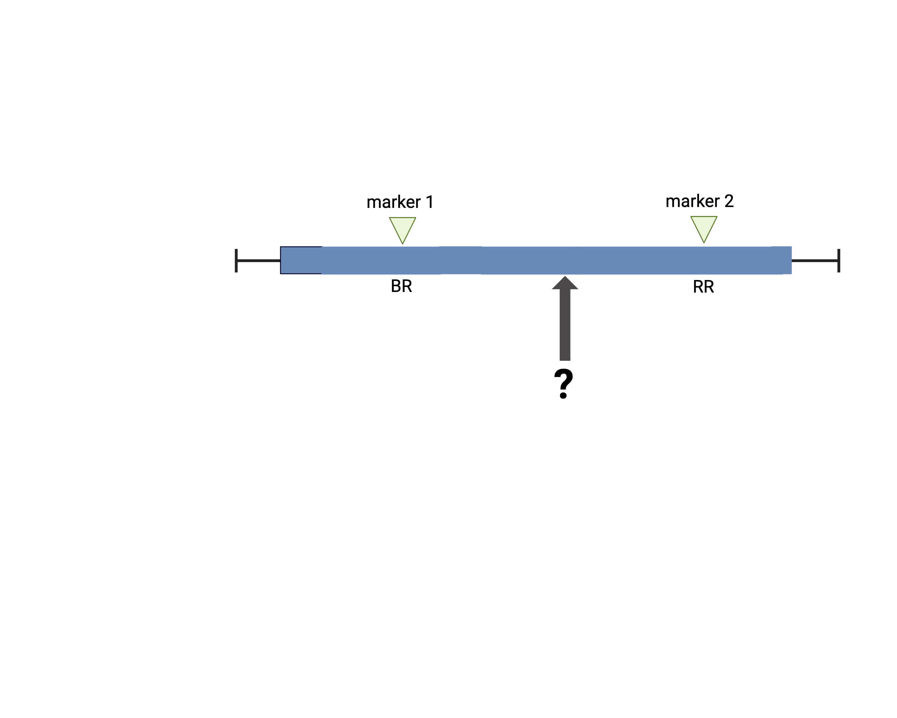
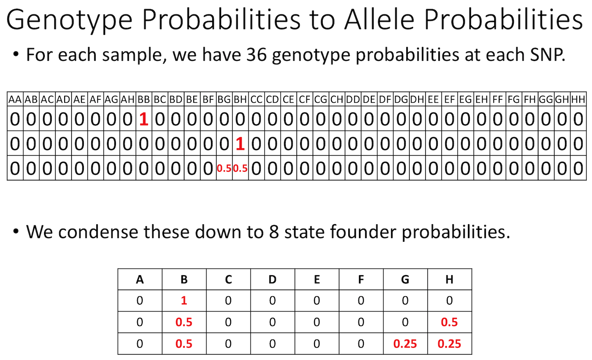

Calculating Genotype Probabilities
Last updated on 2024-10-18 | Edit this page
Estimated time: 60 minutes
Overview
Questions
- How do I calculate QTL at positions between genotyped markers?
- How do I calculate QTL genotype probabilities?
- How do I calculate allele probabilities?
- How can I speed up calculations if I have a large data set?
Objectives
- To explain why the first step in QTL analysis is to calculate genotype probabilities.
- To calculate genotype probabilities.
The first task in QTL analysis is to calculate conditional genotype probabilities, given the observed marker data, at each putative QTL position. For example, the first step would be to determine the probabilities for genotypes BR and RR at the locus indicated below.
{‘a chromosome with two typed markers labeled BR and RR with a locus of unknown genotype between them’}
The calc_genoprob() function calculates QTL genotype
probabilities conditional on the available marker data. These are needed
for most of the QTL mapping functions. The result is returned as a list
of three-dimensional arrays (one per chromosome). Each 3d array of
probabilities is arranged as individuals \(\times\) genotypes \(\times\) positions.

 {‘a
web page showing R data structures including one-dimensional vectors and
lists, two dimensional dataframes and matrices, and n-dimensional
arrays’}.
{‘a
web page showing R data structures including one-dimensional vectors and
lists, two dimensional dataframes and matrices, and n-dimensional
arrays’}.
We’ll use the Attie
BL6/BTBR dataset from Tian et
al (an intercross) as an example. In this study, circulating insulin
levels were measured in an F2 cross between mouse strains C57BL/6J and
BTBTR T+
First, we will load in the qtl2 library, which provides the functions that we will use for QTL analysis.
R
suppressPackageStartupMessages(library(qtl2))
R
cross <- read_cross2(file = 'data/attie_b6btbr_grcm39/attie_control.json')
We need the following block for the site to build on Github. The students do not need to see or run the next block.
To load your own data from your machine, you would use the file path
to your data files. For example, if the file path to your data files is
/Users/myUserName/qtlProject/data, the command to load your
data would look like this:
R
myQTLdata <- read_cross2(file = "/Users/myUserName/qtlProject/data/myqtldata.json" )
The JSON file contains all control information for your data, including names of data files, cross type, column specifications for sex and cross information, and more. This can also be in YAML format. Alternatively, all data files can be zipped together for loading.
R
myQTLdata <- read_cross2(file = "/Users/myUserName/qtlProject/data/myqtldata.zip" )
Back to the BTBR data. Now look at a summary of the cross data and the names of each variable within the data.
R
summary(cross)
OUTPUT
Object of class cross2 (crosstype "f2")
Total individuals 490
No. genotyped individuals 490
No. phenotyped individuals 490
No. with both geno & pheno 490
No. phenotypes 3
No. covariates 8
No. phenotype covariates 0
No. chromosomes 20
Total markers 2057
No. markers by chr:
1 2 3 4 5 6 7 8 9 10 11 12 13 14 15 16 17 18 19 X
156 135 157 126 125 102 109 91 93 123 124 116 116 91 102 66 60 95 50 20 R
names(cross)
OUTPUT
[1] "crosstype" "geno" "gmap" "pmap" "pheno"
[6] "covar" "is_x_chr" "is_female" "cross_info" "alleles" Have a look at the markers listed in the genetic map,
gmap. Markers are listed by chromosome and described by cM
position. View only the markers on the first two chromosomes.
R
head(cross$gmap, n=2)
OUTPUT
$`1`
rs13475697 rs3681603 rs13475703 rs13475710 rs6367205 rs13475716 rs13475717
0.1881141 0.1920975 0.4167755 0.6488793 0.6555814 0.6638576 0.6676198
rs13475719 rs13459050 rs3680898 rs13475727 rs13475728 rs13475729 rs13475731
0.6711377 0.6749344 0.6775292 1.8149573 1.9596637 2.3456569 2.7186389
rs13475737 rs13475744 rs6397513 rs13475747 rs13475748 rs13475749 rs13475750
3.1059517 3.8222865 4.3094607 4.3120150 4.5098582 4.8154609 4.8853505
rs13475751 rs13475752 rs13475762 rs13475764 rs13475765 rs13475768 rs13475769
4.8869793 4.8902179 7.2954871 8.2102887 8.3708197 8.7178703 8.8859153
rs13475771 rs6384194 rs13475790 rs3676270 rs13475794 rs13475801 rs4222269
9.1374722 9.9295192 9.9970634 10.1508878 10.3962716 11.5981956 11.9606369
rs6387241 rs13475822 rs13475824 rs13475826 rs13475827 rs13475834 rs13475880
16.8770742 16.9815396 17.4434784 18.0866148 18.6276972 19.2288050 27.4056813
rs13475883 rs6239834 rs3162895 rs6212146 rs3022802 rs13475899 rs13475900
28.4641674 30.8427150 31.1526514 31.2751278 31.3428706 31.8493556 31.8518088
rs13475906 rs3022803 rs13475907 rs13475909 rs13475912 rs6209698 rs13475929
32.2967145 32.3074644 32.3683291 32.8001894 33.6026526 36.5341646 37.6881435
rs13475931 rs13475933 rs13475934 rs4222476 rs13475939 rs8253473 rs13475941
37.7429827 38.0416271 38.0430095 38.9647582 39.4116688 39.4192277 39.4871064
rs13475944 rs13475947 rs13475948 rs13475950 rs13475951 rs13475954 rs13475955
39.7672829 40.2599440 40.3380113 40.3417592 40.3439501 41.1407252 41.2887176
rs13475963 rs13475966 rs13475967 rs13475970 rs13475960 rs6250696 rs13475973
42.4744416 42.5667702 42.9736574 43.1427994 43.5985261 43.5992946 43.6014053
rs3691187 rs13475988 rs13475991 rs13476023 rs13476024 rs3684654 rs6274257
44.6237384 45.7855528 46.0180221 47.8579278 47.8600317 48.2423958 48.9612178
rs13476045 rs13476049 rs6319405 rs13476050 rs13476051 rs13476054 rs13476057
49.2018340 49.3701384 49.4261039 49.4275718 49.4323558 49.4972616 49.5031830
rs13476059 rs13476060 rs13476062 rs13476066 rs13476067 rs6259837 rs13476080
49.5084008 49.5113545 49.6085043 49.6644819 50.1779477 50.8256056 51.0328603
rs6302966 rs13476085 rs13476089 rs3717360 rs13476090 rs6248251 rs13476091
51.3659553 51.6974451 52.3869798 52.3903517 52.3936241 52.4228715 52.5787388
rs3088725 rs3022832 rs4222577 rs13476100 rs6263067 rs8256168 rs6327099
53.4044231 53.4129004 53.4189013 54.3267003 54.4193890 55.1459517 55.3274320
rs13476111 rs13476119 rs8236484 rs8270838 rs8236489 rs13476129 rs13476134
55.9050491 56.8936305 56.9852502 57.1870637 58.0248893 58.7605079 59.5401544
rs13476135 rs13476137 rs13476138 rs13476140 rs13476148 rs6202860 rs13476158
59.5426193 59.6023794 60.3355828 60.3439598 61.1791787 61.9905512 61.9930265
rs13476163 rs13476177 rs13476178 rs13476183 rs13476184 rs6194543 rs13476196
62.0039607 62.6243588 62.6269118 63.8101331 64.0856907 66.4047817 66.7425394
rs13476201 rs3685700 rs3022846 rs13476210 rs13476214 rs13459163 rs4222816
67.2638714 68.7230251 68.7246243 69.1209547 70.1550813 75.5548371 75.5593190
rs4222820 rs3090340 rs8245949 rs13476242 rs13476251 rs13476254 rs6383012
75.5593202 75.5637846 76.7508053 79.0157673 79.7644000 79.8248805 85.3173344
rs13476279 rs6348421 rs13476290 rs13476300 rs13476302 rs13476304 rs3669814
86.7653503 88.2128991 89.0565541 94.6215368 94.8227821 94.8269227 95.5413280
rs13501301 rs13476316
96.0784002 96.9960494
$`2`
rs13476325 rs13476327 rs13476328 rs13476330 rs3695983 rs13476334 rs13476337
1.329379 1.760872 1.839732 1.950151 1.954566 2.265170 3.619681
rs13476342 rs3696091 rs13476348 rs3681847 rs13476358 rs13476424 rs13476427
4.113919 5.308337 6.708720 7.382269 10.053730 21.102901 21.547272
rs13476432 rs13476433 rs13476438 rs13476440 rs13476445 rs13476446 rs13476448
22.457323 22.458829 22.472305 22.502827 22.703755 22.706606 22.809631
rs13476449 rs13476451 rs13476452 rs13476456 rs6333344 rs13476459 rs6288325
22.811905 22.816989 22.917366 23.496527 23.499872 23.505774 23.764498
rs13476470 rs13476482 rs6203572 rs13476485 rs13476501 rs13476502 rs13476503
25.671278 26.670288 26.702994 27.001404 29.014864 29.017621 29.019099
rs13476525 rs13476526 rs13476530 rs3660779 rs13476533 rs13476534 rs4223189
31.635258 31.882499 32.606343 33.182340 33.622217 33.881289 33.886227
rs6205317 rs13476536 rs3709716 rs13476538 rs13476540 rs6314726 rs13476543
34.125908 34.182229 34.777129 35.011099 35.196852 35.859566 36.045536
rs13476544 rs6222797 rs13476546 rs13476553 rs13476554 rs8263229 rs13476565
36.199822 36.656504 36.783097 37.624894 37.628034 38.509801 39.813261
rs13476566 rs3670631 rs13476583 rs13476586 rs13476592 rs13476595 rs13476645
40.314536 41.215814 43.089828 43.274068 45.681933 46.026997 50.383519
rs13476655 rs13476660 rs6378047 rs13476661 rs13476666 rs13476667 rs13476669
50.804234 51.471634 51.474692 51.557954 52.083779 52.257580 52.543537
rs13476672 rs3724460 rs3143279 rs13476687 rs6278009 rs13476693 rs3022892
52.594599 53.100014 54.071835 54.256293 54.721524 55.005598 55.109510
rs13476700 rs13476702 rs13476703 rs13476705 rs4223406 rs3090608 rs13476739
55.226885 55.233738 55.400903 55.678374 55.949739 57.841429 58.879499
rs13476747 rs13476754 rs6257970 rs13476758 rs3022901 rs13476769 rs4223486
59.218037 59.231937 59.742629 60.304581 61.226450 61.739777 61.741096
rs13476774 rs4223511 rs13476778 rs13476783 rs6234650 rs13476784 rs13476786
61.912021 62.703328 63.294674 63.904805 64.118754 64.219897 64.224107
rs13476788 rs3682725 rs13476801 rs13476803 rs13476816 rs6170159 rs3022909
64.987248 65.971246 66.931607 67.071161 69.496928 69.584633 69.689891
rs13476819 rs13476822 rs13476823 rs3716380 rs6332517 rs13476826 rs13476827
69.754708 71.191302 71.405084 71.816078 71.959179 72.019045 72.087910
rs13476830 rs13476831 rs13476832 rs4223605 rs3022932 rs13476872 rs3692409
72.364799 72.368511 72.371502 76.460822 76.621947 78.531760 79.528125
rs3726342 rs13476882 rs3673613 rs8260429 rs8275858 rs13476892 rs13476894
80.337464 81.259831 82.295892 82.969957 83.669130 84.046818 84.787594
rs3024096 rs13476907 rs13476910 rs13476918 rs3673248 rs13476928 rs13476934
87.473424 87.498263 87.955210 92.672743 94.072805 96.238835 98.601444
rs13476935 rs13476936
99.057281 99.455950 Next we use calc_genoprob() to calculate the QTL
genotype probabilities.
R
probs <- calc_genoprob(cross = cross,
map = cross$gmap,
error_prob = 0.002)
The argument error_prob supplies an assumed genotyping
error probability of 0.002. If a value for error_prob is
not supplied, the default probability is 0.0001.
Recall that the result of calc_genoprob,
probs, is a list of three-dimensional arrays (one per
chromosome).
R
names(probs)
OUTPUT
[1] "1" "2" "3" "4" "5" "6" "7" "8" "9" "10" "11" "12" "13" "14" "15"
[16] "16" "17" "18" "19" "X" Each three-dimensional array of probabilities is arranged as individuals \(\times\) genotypes \(\times\) positions. Have a look at the names of each of the three dimensions for chromosome 19.
R
dimnames(probs$`19`)
OUTPUT
[[1]]
[1] "Mouse3051" "Mouse3551" "Mouse3430" "Mouse3476" "Mouse3414" "Mouse3145"
[7] "Mouse3656" "Mouse3242" "Mouse3427" "Mouse3527" "Mouse3281" "Mouse3405"
[13] "Mouse3530" "Mouse3477" "Mouse3498" "Mouse3526" "Mouse3284" "Mouse3160"
[19] "Mouse3655" "Mouse3615" "Mouse3491" "Mouse3603" "Mouse3191" "Mouse3130"
[25] "Mouse3330" "Mouse3199" "Mouse3614" "Mouse3577" "Mouse3081" "Mouse3204"
[31] "Mouse3513" "Mouse3219" "Mouse3331" "Mouse3301" "Mouse3503" "Mouse3083"
[37] "Mouse3568" "Mouse3189" "Mouse3287" "Mouse3131" "Mouse3311" "Mouse3357"
[43] "Mouse3149" "Mouse3256" "Mouse3644" "Mouse3217" "Mouse3212" "Mouse3082"
[49] "Mouse3156" "Mouse3535" "Mouse3481" "Mouse3123" "Mouse3359" "Mouse3555"
[55] "Mouse3597" "Mouse3624" "Mouse3314" "Mouse3128" "Mouse3531" "Mouse3295"
[61] "Mouse3231" "Mouse3496" "Mouse3438" "Mouse3183" "Mouse3052" "Mouse3237"
[67] "Mouse3462" "Mouse3293" "Mouse3543" "Mouse3276" "Mouse3200" "Mouse3502"
[73] "Mouse3171" "Mouse3364" "Mouse3524" "Mouse3334" "Mouse3355" "Mouse3254"
[79] "Mouse3358" "Mouse3468" "Mouse3192" "Mouse3214" "Mouse3536" "Mouse3606"
[85] "Mouse3226" "Mouse3393" "Mouse3415" "Mouse3266" "Mouse3648" "Mouse3224"
[91] "Mouse3474" "Mouse3381" "Mouse3138" "Mouse3660" "Mouse3616" "Mouse3425"
[97] "Mouse3554" "Mouse3196" "Mouse3528" "Mouse3312" "Mouse3045" "Mouse3585"
[103] "Mouse3471" "Mouse3308" "Mouse3628" "Mouse3429" "Mouse3324" "Mouse3124"
[109] "Mouse3291" "Mouse3452" "Mouse3373" "Mouse3367" "Mouse3579" "Mouse3647"
[115] "Mouse3169" "Mouse3335" "Mouse3122" "Mouse3635" "Mouse3154" "Mouse3484"
[121] "Mouse3652" "Mouse3612" "Mouse3668" "Mouse3233" "Mouse3175" "Mouse3306"
[127] "Mouse3046" "Mouse3663" "Mouse3165" "Mouse3519" "Mouse3592" "Mouse3127"
[133] "Mouse3184" "Mouse3650" "Mouse3599" "Mouse3494" "Mouse3605" "Mouse3505"
[139] "Mouse3573" "Mouse3561" "Mouse3489" "Mouse3480" "Mouse3186" "Mouse3421"
[145] "Mouse3607" "Mouse3346" "Mouse3375" "Mouse3633" "Mouse3589" "Mouse3094"
[151] "Mouse3611" "Mouse3307" "Mouse3133" "Mouse3152" "Mouse3518" "Mouse3209"
[157] "Mouse3056" "Mouse3320" "Mouse3365" "Mouse3313" "Mouse3441" "Mouse3339"
[163] "Mouse3352" "Mouse3159" "Mouse3619" "Mouse3238" "Mouse3203" "Mouse3137"
[169] "Mouse3509" "Mouse3289" "Mouse3054" "Mouse3432" "Mouse3487" "Mouse3179"
[175] "Mouse3572" "Mouse3285" "Mouse3466" "Mouse3252" "Mouse3517" "Mouse3546"
[181] "Mouse3185" "Mouse3665" "Mouse3537" "Mouse3096" "Mouse3600" "Mouse3349"
[187] "Mouse3098" "Mouse3275" "Mouse3667" "Mouse3342" "Mouse3333" "Mouse3300"
[193] "Mouse3244" "Mouse3478" "Mouse3560" "Mouse3501" "Mouse3315" "Mouse3440"
[199] "Mouse3669" "Mouse3486" "Mouse3632" "Mouse3319" "Mouse3453" "Mouse3172"
[205] "Mouse3121" "Mouse3590" "Mouse3215" "Mouse3447" "Mouse3618" "Mouse3340"
[211] "Mouse3047" "Mouse3666" "Mouse3516" "Mouse3225" "Mouse3167" "Mouse3207"
[217] "Mouse3631" "Mouse3444" "Mouse3168" "Mouse3298" "Mouse3602" "Mouse3309"
[223] "Mouse3416" "Mouse3260" "Mouse3146" "Mouse3374" "Mouse3144" "Mouse3485"
[229] "Mouse3610" "Mouse3348" "Mouse3500" "Mouse3613" "Mouse3253" "Mouse3384"
[235] "Mouse3664" "Mouse3206" "Mouse3426" "Mouse3332" "Mouse3210" "Mouse3283"
[241] "Mouse3670" "Mouse3120" "Mouse3274" "Mouse3461" "Mouse3202" "Mouse3472"
[247] "Mouse3437" "Mouse3434" "Mouse3593" "Mouse3055" "Mouse3234" "Mouse3422"
[253] "Mouse3571" "Mouse3236" "Mouse3049" "Mouse3350" "Mouse3249" "Mouse3326"
[259] "Mouse3134" "Mouse3143" "Mouse3493" "Mouse3361" "Mouse3636" "Mouse3436"
[265] "Mouse3510" "Mouse3117" "Mouse3601" "Mouse3303" "Mouse3497" "Mouse3544"
[271] "Mouse3463" "Mouse3118" "Mouse3354" "Mouse3162" "Mouse3464" "Mouse3181"
[277] "Mouse3188" "Mouse3356" "Mouse3521" "Mouse3591" "Mouse3241" "Mouse3467"
[283] "Mouse3469" "Mouse3262" "Mouse3643" "Mouse3548" "Mouse3372" "Mouse3542"
[289] "Mouse3563" "Mouse3583" "Mouse3584" "Mouse3208" "Mouse3661" "Mouse3659"
[295] "Mouse3195" "Mouse3459" "Mouse3653" "Mouse3649" "Mouse3382" "Mouse3180"
[301] "Mouse3386" "Mouse3084" "Mouse3205" "Mouse3299" "Mouse3515" "Mouse3540"
[307] "Mouse3255" "Mouse3177" "Mouse3523" "Mouse3366" "Mouse3567" "Mouse3557"
[313] "Mouse3114" "Mouse3623" "Mouse3419" "Mouse3580" "Mouse3271" "Mouse3385"
[319] "Mouse3492" "Mouse3119" "Mouse3232" "Mouse3598" "Mouse3150" "Mouse3310"
[325] "Mouse3164" "Mouse3587" "Mouse3050" "Mouse3627" "Mouse3506" "Mouse3413"
[331] "Mouse3435" "Mouse3151" "Mouse3112" "Mouse3630" "Mouse3646" "Mouse3223"
[337] "Mouse3187" "Mouse3263" "Mouse3637" "Mouse3662" "Mouse3508" "Mouse3550"
[343] "Mouse3125" "Mouse3545" "Mouse3570" "Mouse3641" "Mouse3136" "Mouse3626"
[349] "Mouse3166" "Mouse3269" "Mouse3529" "Mouse3218" "Mouse3625" "Mouse3448"
[355] "Mouse3378" "Mouse3227" "Mouse3651" "Mouse3182" "Mouse3304" "Mouse3617"
[361] "Mouse3141" "Mouse3552" "Mouse3479" "Mouse3658" "Mouse3539" "Mouse3190"
[367] "Mouse3093" "Mouse3097" "Mouse3126" "Mouse3170" "Mouse3229" "Mouse3520"
[373] "Mouse3582" "Mouse3351" "Mouse3129" "Mouse3153" "Mouse3450" "Mouse3113"
[379] "Mouse3586" "Mouse3549" "Mouse3538" "Mouse3201" "Mouse3556" "Mouse3247"
[385] "Mouse3455" "Mouse3176" "Mouse3344" "Mouse3343" "Mouse3439" "Mouse3629"
[391] "Mouse3286" "Mouse3216" "Mouse3588" "Mouse3488" "Mouse3221" "Mouse3142"
[397] "Mouse3428" "Mouse3111" "Mouse3353" "Mouse3211" "Mouse3569" "Mouse3280"
[403] "Mouse3325" "Mouse3368" "Mouse3553" "Mouse3245" "Mouse3228" "Mouse3135"
[409] "Mouse3622" "Mouse3095" "Mouse3369" "Mouse3609" "Mouse3410" "Mouse3302"
[415] "Mouse3594" "Mouse3483" "Mouse3197" "Mouse3336" "Mouse3507" "Mouse3305"
[421] "Mouse3532" "Mouse3250" "Mouse3194" "Mouse3449" "Mouse3178" "Mouse3198"
[427] "Mouse3620" "Mouse3596" "Mouse3638" "Mouse3222" "Mouse3147" "Mouse3163"
[433] "Mouse3273" "Mouse3473" "Mouse3578" "Mouse3465" "Mouse3279" "Mouse3558"
[439] "Mouse3443" "Mouse3490" "Mouse3460" "Mouse3248" "Mouse3243" "Mouse3431"
[445] "Mouse3564" "Mouse3347" "Mouse3565" "Mouse3525" "Mouse3574" "Mouse3329"
[451] "Mouse3140" "Mouse3257" "Mouse3328" "Mouse3193" "Mouse3132" "Mouse3220"
[457] "Mouse3235" "Mouse3499" "Mouse3246" "Mouse3270" "Mouse3608" "Mouse3442"
[463] "Mouse3157" "Mouse3642" "Mouse3566" "Mouse3139" "Mouse3282" "Mouse3053"
[469] "Mouse3454" "Mouse3363" "Mouse3213" "Mouse3654" "Mouse3514" "Mouse3341"
[475] "Mouse3401" "Mouse3388" "Mouse3604" "Mouse3161" "Mouse3451" "Mouse3634"
[481] "Mouse3482" "Mouse3559" "Mouse3645" "Mouse3264" "Mouse3155" "Mouse3251"
[487] "Mouse3297" "Mouse3541" "Mouse3158" "Mouse3294"
[[2]]
[1] "BB" "BR" "RR"
[[3]]
[1] "rs4232073" "rs13483548" "rs13483549" "rs13483550" "rs13483554"
[6] "rs13483555" "rs3090321" "rs3090137" "rs6309315" "rs13483577"
[11] "rs3090325" "rs13483579" "rs13483584" "rs13483586" "rs13483587"
[16] "rs13483589" "rs13483592" "rs13483593" "rs6344448" "rs13483594"
[21] "rs13483595" "rs3705022" "rs13483609" "rs13483612" "rs13483648"
[26] "rs13483650" "rs13483654" "rs13483658" "rs13483660" "rs13483664"
[31] "rs13483666" "rs13483667" "rs13483670" "rs8275553" "rs8275912"
[36] "rs13483677" "rs13483679" "rs13483680" "rs13483681" "rs3660143"
[41] "rs13483682" "rs13483683" "rs13483685" "rs13483686" "rs6355398"
[46] "rs4222106" "rs13483690" "rs13483693" "rs13483695" "rs13483699"View the first three rows of genotype probabilities for the first genotyped marker on chromosome 19.
R
(probs$`19`)[1:5,,"rs4232073"]
OUTPUT
BB BR RR
Mouse3051 1.317728e-11 1.235895e-07 9.999999e-01
Mouse3551 9.999840e-01 1.595361e-05 5.027172e-08
Mouse3430 1.317728e-11 1.235895e-07 9.999999e-01
Mouse3476 9.999999e-01 1.235895e-07 1.317728e-11
Mouse3414 6.179474e-08 9.999999e-01 6.179474e-08We can also view the genotype probabilities using plot_genoprob. The arguments to this function specify:
-
probs: the genotype probabilities, -
map: the marker map, -
ind: the index of the individual to plot, -
chr: the index of the chromosome to plot.
R
plot_genoprob(probs = probs,
map = cross$pmap,
ind = 1,
chr = 19,
main = rownames(probs[['19']])[1])
The coordinates along chromosome 19 are shown on the horizontal axis and the three genotypes are shown on the vertical axis. Higher genotype probabilities are plotted in darker shades. This mouse has a RR genotype on the proximal end of the chromosome and transitions to BR.
Challenge 1
1). Load a second dataset from Arabidopsis recombinant inbred lines (Moore et al, Genetics, 2013) in a study of plant root response to gravity (gravitropism).
grav <- read_cross2(file = system.file('extdata', 'grav2.zip', package = 'qtl2'))
2). How many individuals were in the study? How many phenotypes? How
many chromosomes?
3). Insert pseudomarkers at 1cM intervals and save the results to an
object called gravmap. Have a look at the first
chromosome.
4). Calculate genotype probabilities and save the results to an object
called gravpr. View the genotypes for the first three
markers and pseudomarkers on chromosome 1 for the first five
individuals.
1).
grav <- read_cross2(file = system.file('extdata', 'grav2.zip', package = 'qtl2'))
2). summary(grav)
3).
gravmap <- insert_pseudomarkers(map = grav$gmap, step = 1)
followed by head(gravmap, n=1)
4).
gravpr <- calc_genoprob(cross = grav, map = gravmap)
followed by(gravpr$``1``)[1:5,,"PVV4"],
(gravpr$1)[1:5,,"c1.loc1"], and(gravpr$1)[1:5,,"c1.loc2"]
R
m = maxmarg(probs)
ph = guess_phase(cross, m)
plot_onegeno(ph, cross$pmap)
Challenge 3
Calculate genotype probabilities for a different data set from the qtl2 data repository, this
one from a study of obesity and diabetes in a C57BL/6 (B6) × BTBR
intercross.
1). Create a new script in RStudio with File -> New File -> R
Script.
2) Download the B6 x BTBR zip file from the qtl2 data repository into an
object called b6btbr by running this code:b6btbr <- read_cross2(file = "https://raw.githubusercontent.com/rqtl/qtl2data/master/B6BTBR/b6btbr.zip")
3). View a summary of the b6btbr data. How many
individuals? phenotypes? chromosomes? markers?
4). View the genetic map for the b6btbr data.
5). Insert pseudomarkers at 2 cM intervals. Assign the results to an
object called b6btbrmap.
6). Calculate genotype probabilities assuming a genotyping error
probability of 0.001. Assign the results to an object called
b6btbrpr.
7). View the first several rows of genotype probabilities for any marker
on chromosome 18.
1). Create a new script in RStudio with File -> New File -> R
Script.
2).
b6btbr <- read_cross2(file = "https://raw.githubusercontent.com/rqtl/qtl2data/master/B6BTBR/b6btbr.zip
3). summary(b6btbr) shows 544 individuals, 3 phenotypes, 20
chromosomes, 2057 markers.
4). b6btbr$gmap
5).
b6btbrmap <- insert_pseudomarkers(map=b6btbr$gmap, step=2)
6).
b6btbrpr <- calc_genoprob(cross=b6btbr, map=b6btbrmap, error_prob=0.001)
7). dimnames((b6btbrpr$18)) shows all marker
names for chromosome 18.
head((b6btbrpr$18)[,,"c18.loc48"]) gives
genotype probabilities for an example pseudomarker, while
head((b6btbrpr$18)[,,"rs6338896"]) gives
genotype probabilities for a genotyped marker.
Parallel calculations (optional) To speed up the
calculations with large datasets on a multi-core machine, you can use
the argument cores. With cores=0, the number
of available cores will be detected via
parallel::detectCores(). Otherwise, specify the number of
cores as a positive integer.
R
probs <- calc_genoprob(cross = iron, map = map, error_prob = 0.002, cores = 4)
Allele probabilities (optional) The genome scan
functions use genotype probabilities as well as a matrix of phenotypes.
If you wished to perform a genome scan via an additive allele model, you
would first convert the genotype probabilities to allele probabilities,
using the function genoprob_to_alleleprob().
R
apr <- genoprob_to_alleleprob(probs = probs)
The figure below shows genotype and allele probabilities for 3 samples. In the Diversity Outbred, there are 36 possible genotype states (AA, AB, AC, …, BB, BC, BD, …, CC, CD, CE, …, DD, DE, DF, …, EE,…) or 8 + 7 + 6 + 5 + 4 + 3 + 2 + 1. The first SNP below has genotype BB. In the table describing alleles (8 state founder probabilities), the probability that this SNP has a B allele is 1. The 2nd SNP has genotype BH, so the allele table shows a probability of 0.5 for B and 0.5 for H. The third SNP is either BG or BH, and has a probability of 0.5 for each of these genotypes. The allele table shows a probability of 0.5 for allele B, and 0.25 for both G and H.
{‘a table showing the probabilities for each of 36 genotypes in the Diversity Outbred followed by a second table showing probabilities for each of the 8 founder alleles’}
Key Points
- The first step in QTL analysis is to calculate genotype probabilities.
- Calculate genotype probabilities between genotyped markers with
calc_genoprob().